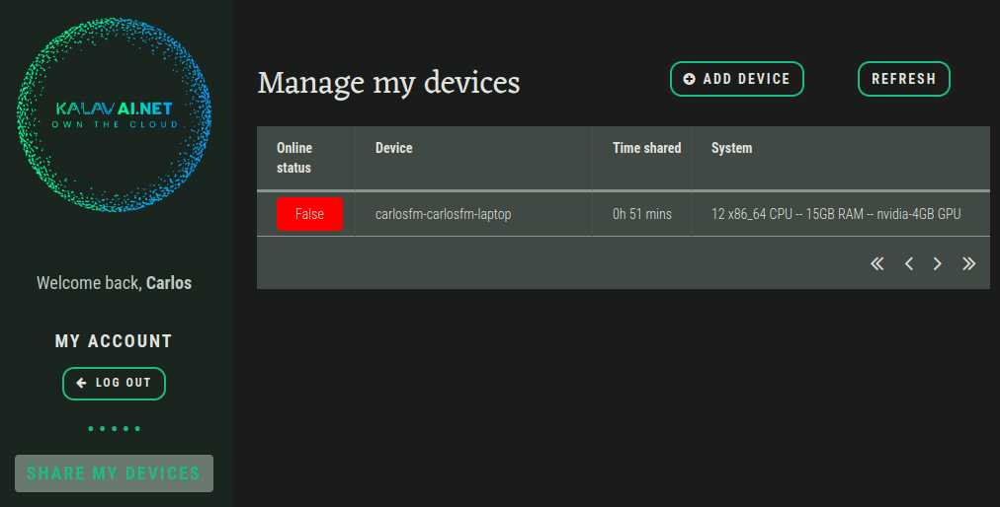

Share your device
The Kalavai-client is an app that allows you to control when and how to share your device. To get started with sharing, you'll need your kalavai account credentials. Click below to create one. Then you are ready to install and run the kalavai-client, which will let you share your device's spare capacity with the world and earn!
Technical requirements
The kalavai client app currently supports the following architectures:
- amd64
- x86_64
The following OS are supported:
- Linux (Debian, CentOS, SuSe, Ubuntu, Fedora, RedHat).
If your system is not currently supported, open an issue here and request it. We are expanding this list constantly.
Install (Linux)
To install the kalavai client app that allows you to share your device and earn, use the following installer:
curl -sfL https://raw.githubusercontent.com/kalavai-net/kalavai-client/main/scripts/install_client.sh | bash -
Install (Windows)
[Work in progress]
Pre-requisites
If you have an NVIDIA GPU, make sure your drivers are up to date. Check in the command line to see if your device is being recognised.
nvidia-smi
The output should look similar to this:
+-----------------------------------------------------------------------------------------+
| NVIDIA-SMI 550.67 Driver Version: 550.67 CUDA Version: 12.4 |
|-----------------------------------------+------------------------+----------------------+
| GPU Name Persistence-M | Bus-Id Disp.A | Volatile Uncorr. ECC |
| Fan Temp Perf Pwr:Usage/Cap | Memory-Usage | GPU-Util Compute M. |
| | | MIG M. |
|=========================================+========================+======================|
| 0 NVIDIA GeForce RTX 3050 ... Off | 00000000:01:00.0 Off | N/A |
| N/A 41C P8 6W / 60W | 9MiB / 4096MiB | 0% Default |
| | | N/A |
+-----------------------------------------+------------------------+----------------------+
+-----------------------------------------------------------------------------------------+
| Processes: |
| GPU GI CI PID Type Process name GPU Memory |
| ID ID Usage |
|=========================================================================================|
| 0 N/A N/A 2067 G /usr/lib/xorg/Xorg 4MiB |
+-----------------------------------------------------------------------------------------+
Install using the PowerShell
- Open your PowerShell
- Install and update Windows Subsystem Linux (WSL)
wsl --install
- Update kernel
wsl --update
- Set up WSL options: https://learn.microsoft.com/en-us/windows/wsl/wsl-config
- disable swap
- ip route tables legacy
-
edit /etc/wsl.conf
-
Enter the VM
wsl
- Install the kalavai client app:
curl -sfL https://raw.githubusercontent.com/kalavai-net/kalavai-client/main/scripts/install_client.sh | bash -
Use kalavai-client
Once it's installed, run the CLI app with:
kalavai --help
usage: kalavai [-h] command ...
positional arguments:
command
login Login with your Kalavai user email and password. Get an account from https://platform.kalavai.net
logout Logout from your kalavai user account.
start Join Kalavai cluster and start/resume sharing resources.
status Check the current status of your device.
stop Stop sharing your device and clean up. DO THIS ONLY IF YOU WANT TO REMOVE KALAVAI-CLIENT from your device.
pause Pause sharing your device and make your device unavailable for kalavai scheduling.
options:
-h, --help show this help message and exit
To start sharing your device, log in with the client and start sharing:
kalavai login --useremail your@email.address --password your-password
kalavai start
This will start the sharing loop. Head over to your online account to see more details, by selecting Share your device option. All your devices will appear there, along with the shared time and specs.
